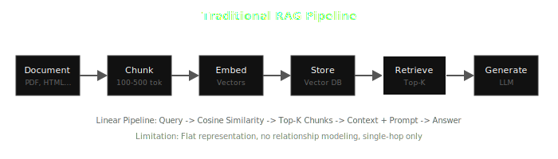
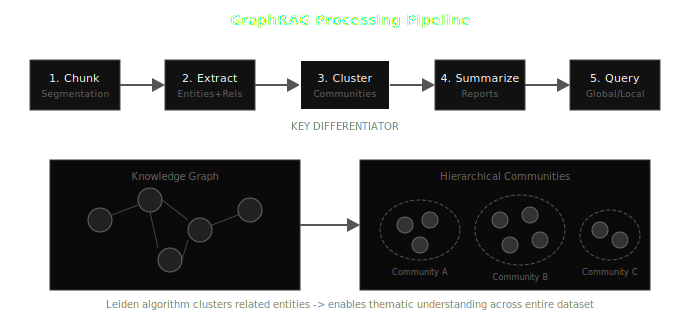
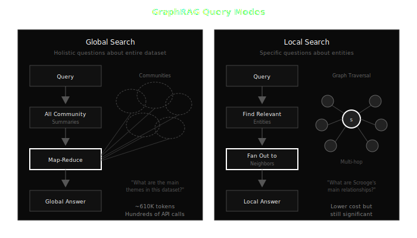
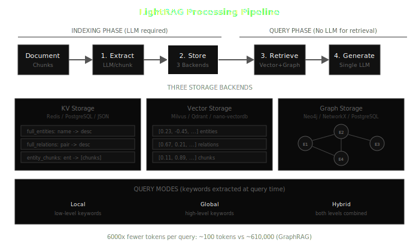
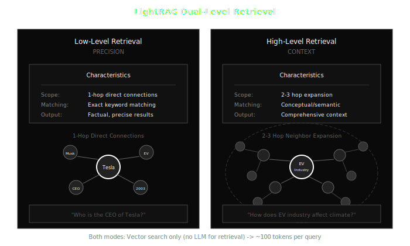
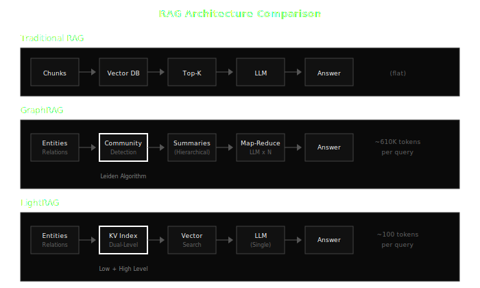
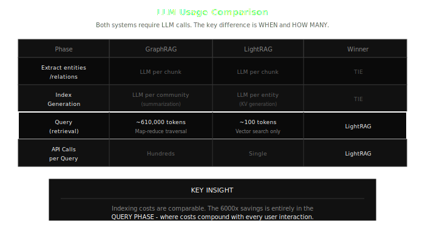
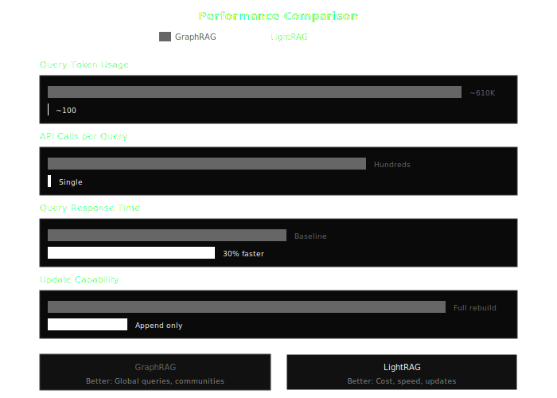
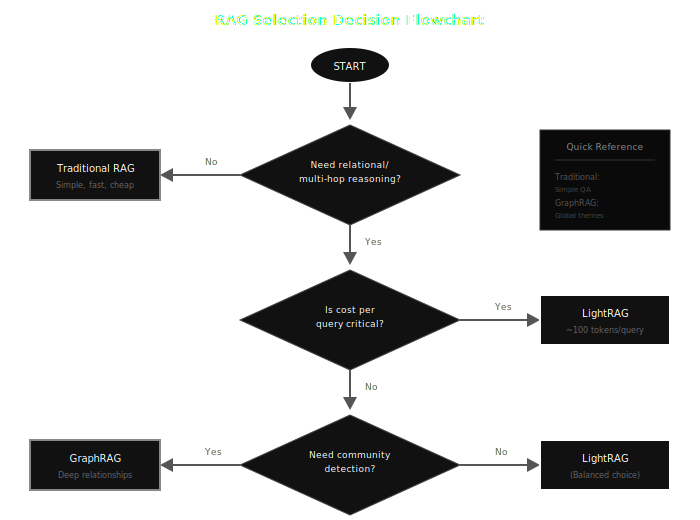

Retrieval-Augmented Generation has become the default architecture for grounding LLM responses in external knowledge. According to Forrester's 2025 analysis, RAG is now the standard for enterprise knowledge assistants. But RAG is not monolithic - it has evolved significantly.
In this post, I'll walk through three distinct approaches: Traditional RAG, GraphRAG, and LightRAG. We'll look at how each works, when to use them, and the real trade-offs you'll face in production.
1. The Problem Space
Large language models have fundamental limitations: hallucinations, knowledge cutoffs, and finite context windows. RAG addresses these by retrieving relevant information at query time and injecting it into the prompt.
The Evolution
RAG has gone through several generations:
- Naive RAG (2020-2022): Simple chunk-and-retrieve
- Advanced RAG (2022-2023): Better chunking, reranking, query rewriting
- Modular RAG (2023-2024): Composable pipelines, routing
- Graph-based RAG (2024-present): Knowledge graphs meet retrieval
The Challenge
Balancing four competing concerns:
- Accuracy: Does the system retrieve the right information?
- Cost: How many tokens and API calls per query?
- Latency: How fast is the response?
- Maintainability: How easily can the knowledge base be updated?
Different RAG architectures make different trade-offs across these dimensions.
2. Traditional RAG
The original RAG architecture follows a linear pipeline.
Processing Pipeline
- Document Loading: Ingest raw documents (PDF, HTML, TXT)
- Chunking: Split into segments (100-500 tokens)
- Fixed-size: Split at token count boundaries
- Recursive: Split by separators (paragraphs → sentences → words)
- Semantic: Split at topic boundaries using embeddings
- Sentence-based: Preserve complete sentences
- Embedding: Convert chunks to dense vectors (OpenAI, Cohere, local models)
- Indexing: Store in vector database (FAISS, Pinecone, Weaviate, Chroma)
- Retrieval: Query embedding → cosine similarity → top-k chunks
- Augmentation: Inject retrieved context into prompt
- Generation: LLM produces response from retrieved context
Strengths
- Simple to implement and debug
- Low latency (~120ms)
- Mature ecosystem with extensive tooling
- Cost-effective for simple queries
Weaknesses
| Limitation | Impact |
|---|---|
| Information Loss | Arbitrary chunking disrupts semantic boundaries |
| Flat Representation | No relationship modeling between concepts |
| Context Fragmentation | Related information scattered across chunks |
| Single-Hop Only | Cannot traverse relationships for complex queries |
| No Global Understanding | Cannot answer thematic questions |
| Redundancy | Same information duplicated across overlapping chunks |
When Traditional RAG Fails
Traditional RAG breaks down on three types of queries:
- Multi-hop reasoning: "How does X relate to Y through Z?"
- Thematic questions: "What are the key trends in this dataset?"
- Cross-document synthesis: "Compare perspectives across all sources"
Ask "What are the main themes in this dataset?" and traditional RAG has no good answer - it can only return the most similar chunks, not synthesize across all of them.
3. Solution 1: GraphRAG
Microsoft Research released GraphRAG in 2024 to address these limitations. The core insight: knowledge graphs preserve relational structure that chunking destroys.
Processing Pipeline
Stage 1: Chunking Document segmentation, similar to traditional RAG but with smaller chunks to improve entity extraction accuracy.
Stage 2: Entity & Relationship Extraction
LLM extracts entities (nodes) and relationships (edges) from each chunk. Output: knowledge graph triples like (Marie Curie) → [discovered] → (Radium).
Stage 3: Community Detection This is the key differentiator. The Leiden algorithm clusters related entities into hierarchical communities. These groupings enable thematic understanding across the entire dataset.
Stage 4: Community Summarization LLM generates summary reports for each community at multiple levels, from fine-grained to high-level themes.
Stage 5: Query Processing Two distinct modes based on query type.
Query Modes
Global Search handles holistic questions about the entire dataset:
- Query all community summaries in parallel
- Map-reduce aggregation across communities
- Synthesize global answer from partial responses
Example: "What are the main themes in this dataset?"
Cost: High (~610K tokens, hundreds of API calls)
Local Search handles specific questions about entities:
- Find relevant entities from query
- Fan out to neighboring nodes (multi-hop)
- Gather local context from subgraph
- Generate answer from local information
Example: "What are Scrooge's main relationships?"
Cost: Lower than global, but still significant
Trade-offs
Strengths:
- Deep relational understanding
- Excellent global/thematic queries
- Multi-hop reasoning capability
- Automatic pattern and community discovery
- Microsoft enterprise backing
Limitations:
- Extremely high query cost (~610K tokens)
- Hundreds of API calls per query (rate limit risk)
- Slow indexing due to community detection
- Full rebuild required for updates
- Complex infrastructure
Technical Deep Dive
Graph Database Options:
- Neo4j: Production-grade, ACID compliant, Cypher query language
- NetworkX: Python library, good for prototyping, in-memory only
- Custom: JSON/pickle serialization for simpler deployments
Community Detection Algorithms:
- Leiden: Default choice, hierarchical clustering, better modularity than Louvain
- Louvain: Faster but less accurate, good for initial experiments
Embedding Integration: GraphRAG can operate in hybrid mode, combining graph traversal with vector similarity for entity matching. This improves recall when entity names vary across documents.
Hierarchical Summary Strategy: Communities are summarized at multiple levels (e.g., 3-5 levels). Higher levels capture broader themes, lower levels preserve detail. Query routing determines which level to access based on question scope.
4. Solution 2: LightRAG
In October 2024, researchers from Hong Kong University released LightRAG specifically to address GraphRAG's cost and update limitations.
Core Approach
LightRAG combines knowledge graphs with vector retrieval using dual-level key-value pairs. This enables fast, cost-effective retrieval without expensive community clustering.
Key Features
- Dual-level retrieval (Low + High)
- Vector-based search at query time
- Incremental updates (append-only)
- 6000x fewer tokens per query
Processing Pipeline
Stage 1: Entity & Relationship Extraction LLM call per chunk, similar to GraphRAG. Extracts entities and relationships.
Stage 2: Dual-Level Key-Value Indexing LLM generates keys for each entity/relationship:
- Low-level keys: Specific entity identifiers
- High-level keys: Thematic/conceptual descriptors
Stage 3: Vector Embedding Entity and relationship descriptions are embedded and stored in a lightweight vector database.
Stage 4: Query Processing Vector search retrieves relevant entities/relationships. No LLM needed for retrieval. Single LLM call for final answer generation.
Dual-Level Retrieval
Low-Level Retrieval (Precision)
| Aspect | Description |
|---|---|
| Scope | 1-hop direct connections |
| Matching | Exact keyword matching |
| Output | Factual, precise results |
| Use Case | "Who is the CEO of Tesla?" |
High-Level Retrieval (Context)
| Aspect | Description |
|---|---|
| Scope | 2-3 hop neighbor expansion |
| Matching | Conceptual/semantic matching |
| Output | Comprehensive context |
| Use Case | "How does EV industry affect climate?" |
Hybrid Mode combines both for balanced precision and context.
Trade-offs
Strengths:
- 90%+ cost reduction at query time
- 30% faster query response than traditional RAG
- Incremental updates without full rebuild
- Simple architecture, easier to debug
- Fully open source and customizable
Limitations:
- Newer technology (October 2024), less battle-tested
- Smaller ecosystem and community
- No automatic community detection
- May miss complex multi-hop relationships that require global context
Technical Deep Dive
Storage Architecture:
- nano-vectordb: Lightweight vector store, optimized for small-medium datasets
- JSON key-value stores: Entity profiles and relationship data
- Deduplication: Entity merging based on name similarity and context overlap
Incremental Update Mechanism: New documents are processed independently. Entities are matched against existing nodes using fuzzy matching. New relationships are appended without rebuilding the entire graph. This enables real-time knowledge base updates.
Integration Options:
- LLM providers: OpenAI, Anthropic, local models (Ollama, vLLM)
- Embedding models: OpenAI ada, local sentence transformers
- Storage backends: Local files, cloud storage (S3, GCS)
Important Clarification
Indexing still requires LLM calls, similar to GraphRAG. The 6000x savings is entirely in the query phase, not indexing. This distinction matters because query costs compound with every user interaction.
5. Comparative Analysis
LLM Usage Comparison
Both GraphRAG and LightRAG require LLM calls during indexing. The critical difference is query-time behavior:
| Phase | GraphRAG | LightRAG |
|---|---|---|
| Extract entities/relations | LLM per chunk | LLM per chunk |
| Index generation | LLM per community | LLM per entity |
| Query (retrieval) | ~610,000 tokens | ~100 tokens |
| API calls per query | Hundreds | Single |
The 6000x savings compounds with scale. At 1000 queries/day, that's the difference between $600 and $0.10 in token costs.
Performance Metrics
| Metric | Traditional RAG | GraphRAG | LightRAG |
|---|---|---|---|
| Query Latency | ~120ms | 2x baseline | ~80ms (30% faster) |
| Query Token Cost | Low (~1K) | Very High (~610K) | Low (~100) |
| Indexing Cost | Low | High | High |
| Incremental Updates | Fast | Full rebuild | Append only |
| Setup Complexity | Simple | Complex | Moderate |
Capability Matrix
| Capability | Traditional | GraphRAG | LightRAG |
|---|---|---|---|
| Direct fact lookup | Excellent | Good | Good |
| Multi-hop reasoning | Poor | Excellent | Good |
| Global/thematic queries | Poor | Excellent | Good |
| Entity relationships | Poor | Excellent | Good |
| Community discovery | None | Excellent | None |
| Real-time updates | Excellent | Poor | Excellent |
| Cost efficiency | Excellent | Poor | Excellent |
6. Decision Framework
When to Choose GraphRAG
Choose when:
- Budget flexibility allows higher per-query costs
- Enterprise requirements need Microsoft backing
- Knowledge base is relatively static
- Users ask global/thematic questions frequently
- Pattern and community discovery is valuable
- Complex multi-hop reasoning is critical
Avoid when:
- Cost per query is a hard constraint
- Data updates frequently (daily/weekly)
- Low latency (<100ms) is required
- Infrastructure simplicity is preferred
When to Choose LightRAG
Choose when:
- Cost sensitivity at scale
- Startup/MVP phase requiring quick deployment
- Dynamic, frequently updated knowledge base
- Speed and user experience are priorities
- Processing 100K+ documents
- Experimenting with graph RAG concepts
Avoid when:
- Community/cluster discovery is essential
- Maximum relational depth required
- Need extensive enterprise support
- Very complex multi-hop reasoning across entire corpus
When to Choose Traditional RAG
Choose when:
- Simple fact lookup queries dominate
- Minimal infrastructure desired
- Small document corpus (<1K docs)
- Rapid prototyping needed
- No relational queries expected
Avoid when:
- Users ask "why" or "how" questions
- Information spans multiple documents
- Thematic or summary queries are common
7. Implementation Considerations
Infrastructure Requirements
| Component | Traditional | GraphRAG | LightRAG |
|---|---|---|---|
| Vector DB | Required | Optional | Required |
| Graph DB | None | Recommended | Optional |
| LLM API | Generation only | Heavy usage | Moderate |
| Compute | Low | High | Moderate |
Integration Patterns
Standalone Deployment: Single RAG system handles all queries. Simplest to implement and maintain.
Hybrid Approach (Traditional + Graph): Route simple queries to traditional RAG, complex queries to graph-based. Use query classification to determine routing. Balances cost and capability.
Agentic Orchestration: RAG as a tool within an agent framework. Agent decides when to retrieve, which RAG to use, and how to combine results. Most flexible but highest complexity.
Evaluation Metrics
When benchmarking RAG systems, measure:
- Faithfulness: Does the answer accurately reflect retrieved context?
- Answer Relevance: Does the response address the query?
- Context Relevance: Is the retrieved context appropriate?
- Latency: Time to first token and total response time
- Cost: Tokens consumed per query
8. Future Directions
Emerging Approaches (2025)
- GFM-RAG: Graph Foundation Model integration
- KET-RAG: Knowledge-Enhanced Traversal
- NodeRAG: Node-centric retrieval optimization
- Agentic RAG: Multi-agent orchestration with RAG
Open Research Questions
- Optimal graph construction strategies
- Balancing indexing vs query costs
- Hybrid retrieval mechanisms
- Automated architecture selection based on query patterns
Industry Trends
What I'm seeing in production deployments:
- RAG as default: Most enterprise AI projects now start with RAG, not fine-tuning
- Graph-aware retrieval going mainstream: Even traditional RAG systems are adding relationship awareness
- Cost optimization driving adoption: LightRAG's approach resonates because query costs matter at scale
- Hybrid architectures emerging: Companies running multiple RAG types with intelligent routing
9. Conclusion
RAG is not one thing. Traditional RAG offers simplicity and speed. GraphRAG provides deep relational understanding at high cost. LightRAG balances graph-based reasoning with practical economics.
The right choice depends on your constraints:
| Scenario | Recommendation |
|---|---|
| Startup MVP | LightRAG |
| Enterprise static KB | GraphRAG |
| Simple Q&A bot | Traditional RAG |
| Cost-sensitive scale | LightRAG |
| Research/Discovery | GraphRAG |
| Frequent updates | LightRAG |
Choose based on your query patterns, budget constraints, and update frequency - not hype.
The field is moving fast. GraphRAG established that graphs matter for RAG. LightRAG proved you don't need to pay GraphRAG prices to get graph benefits. The next iteration will likely push both dimensions further.
检索增强生成（RAG）已成为将LLM响应锚定于外部知识的默认架构。根据Forrester 2025年的分析，RAG现已成为企业知识助手的标准方案。但RAG并非铁板一块——它已经历了显著的演进。
在这篇文章中，我将介绍三种不同的方法：传统RAG、GraphRAG和LightRAG。我们将探讨每种方法的工作原理、适用场景，以及生产环境中真正面临的权衡。
1. 问题空间
大型语言模型有根本性局限：幻觉、知识截止日期、有限的上下文窗口。RAG通过在查询时检索相关信息并注入提示来解决这些问题。
演进历程
RAG经历了几代发展：
- 朴素RAG（2020-2022）：简单的分块检索
- 高级RAG（2022-2023）：更好的分块、重排序、查询重写
- 模块化RAG（2023-2024）：可组合的流水线、路由
- 图RAG（2024至今）：知识图谱与检索的结合
核心挑战
平衡四个相互竞争的关切：
- 准确性：系统能否检索到正确信息？
- 成本：每次查询消耗多少tokens和API调用？
- 延迟：响应速度如何？
- 可维护性：知识库更新有多容易？
不同的RAG架构在这些维度上做出不同的权衡。
2. 传统RAG
原始RAG架构遵循线性流水线。
处理流程
- 文档加载：摄入原始文档（PDF、HTML、TXT）
- 分块：切分为片段（100-500 tokens）
- 固定大小：按token数边界切分
- 递归：按分隔符切分（段落 → 句子 → 词）
- 语义：使用嵌入在主题边界处切分
- 句子级：保持完整句子
- 嵌入：将块转换为稠密向量（OpenAI、Cohere、本地模型）
- 索引：存储在向量数据库（FAISS、Pinecone、Weaviate、Chroma）
- 检索：查询嵌入 → 余弦相似度 → top-k块
- 增强：将检索到的上下文注入提示
- 生成：LLM根据检索到的上下文生成响应
优势
- 实现和调试简单
- 低延迟（~120ms）
- 成熟的生态系统和丰富的工具
- 对简单查询性价比高
劣势
| 局限 | 影响 |
|---|---|
| 信息丢失 | 任意分块破坏语义边界 |
| 扁平表示 | 概念之间无关系建模 |
| 上下文碎片化 | 相关信息分散在各块中 |
| 仅单跳 | 无法遍历关系处理复杂查询 |
| 无全局理解 | 无法回答主题性问题 |
| 冗余 | 相同信息在重叠块中重复 |
传统RAG失效的场景
传统RAG在三类查询上会崩溃：
- 多跳推理："X通过Z与Y有什么关系？"
- 主题性问题："这个数据集的关键趋势是什么？"
- 跨文档综合："比较所有来源的观点"
问"这个数据集的主要主题是什么？"传统RAG无法给出好的答案——它只能返回最相似的块，而不能跨所有块进行综合。
3. 方案一：GraphRAG
微软研究院于2024年发布GraphRAG来解决这些局限。核心洞察：知识图谱保留了分块所破坏的关系结构。
处理流程
阶段1：分块 文档分割，类似传统RAG，但使用更小的块以提高实体提取准确性。
阶段2：实体与关系提取
LLM从每个块中提取实体（节点）和关系（边）。输出：知识图谱三元组，如(居里夫人) → [发现] → (镭)。
阶段3：社区检测 这是关键差异点。Leiden算法将相关实体聚类为层次化社区。这些分组使得能够理解整个数据集的主题。
阶段4：社区摘要 LLM为每个社区生成多层次的摘要报告，从细粒度到高层主题。
阶段5：查询处理 根据查询类型有两种不同模式。
查询模式
全局搜索处理关于整个数据集的整体性问题：
- 并行查询所有社区摘要
- 跨社区Map-reduce聚合
- 从部分响应合成全局答案
示例："这个数据集的主要主题是什么？"
成本：高（~610K tokens，数百次API调用）
局部搜索处理关于特定实体的问题：
- 从查询中找到相关实体
- 扩展到邻近节点（多跳）
- 从子图收集局部上下文
- 从局部信息生成答案
示例："Scrooge的主要关系是什么？"
成本：比全局低，但仍然显著
权衡
优势：
- 深度关系理解
- 优秀的全局/主题查询
- 多跳推理能力
- 自动模式和社区发现
- 微软企业级支持
局限：
- 极高的查询成本（~610K tokens）
- 每次查询数百次API调用（触发限速风险）
- 由于社区检测导致索引缓慢
- 更新需要完全重建
- 基础设施复杂
4. 方案二：LightRAG
2024年10月，香港大学的研究人员发布了LightRAG，专门解决GraphRAG的成本和更新局限。
核心方法
LightRAG使用双层键值对将知识图谱与向量检索相结合。这实现了快速、低成本的检索，无需昂贵的社区聚类。
关键特性
- 双层检索（低层+高层）
- 查询时基于向量搜索
- 增量更新（仅追加）
- 每次查询减少6000倍tokens
处理流程
阶段1：实体与关系提取 每块一次LLM调用，类似GraphRAG。提取实体和关系。
阶段2：双层键值索引 LLM为每个实体/关系生成键：
- 低层键：特定实体标识符
- 高层键：主题/概念描述符
阶段3：向量嵌入 实体和关系描述被嵌入并存储在轻量级向量数据库中。
阶段4：查询处理 向量搜索检索相关实体/关系。**检索不需要LLM。**最终答案生成仅需一次LLM调用。
双层检索
低层检索（精确）
| 方面 | 描述 |
|---|---|
| 范围 | 1跳直接连接 |
| 匹配 | 精确关键词匹配 |
| 输出 | 事实性、精确的结果 |
| 用例 | "谁是特斯拉的CEO？" |
高层检索（上下文）
| 方面 | 描述 |
|---|---|
| 范围 | 2-3跳邻居扩展 |
| 匹配 | 概念/语义匹配 |
| 输出 | 全面的上下文 |
| 用例 | "电动车行业如何影响气候？" |
混合模式结合两者以平衡精确度和上下文。
重要澄清
索引仍然需要LLM调用，类似GraphRAG。6000倍的节省完全在查询阶段，而非索引阶段。这个区别很重要，因为查询成本随每次用户交互而累积。
5. 对比分析
LLM使用对比
GraphRAG和LightRAG在索引期间都需要LLM调用。关键区别在于查询时的行为：
| 阶段 | GraphRAG | LightRAG |
|---|---|---|
| 提取实体/关系 | 每块一次LLM | 每块一次LLM |
| 索引生成 | 每社区一次LLM | 每实体一次LLM |
| 查询（检索） | ~610,000 tokens | ~100 tokens |
| 每次查询API调用 | 数百次 | 单次 |
6000倍的节省随规模累积。每天1000次查询，这意味着token成本是$600还是$0.10的差别。
性能指标
| 指标 | 传统RAG | GraphRAG | LightRAG |
|---|---|---|---|
| 查询延迟 | ~120ms | 2倍基线 | ~80ms（快30%） |
| 查询Token成本 | 低（~1K） | 极高（~610K） | 低（~100） |
| 索引成本 | 低 | 高 | 高 |
| 增量更新 | 快 | 需完全重建 | 仅追加 |
| 部署复杂度 | 简单 | 复杂 | 中等 |
能力矩阵
| 能力 | 传统 | GraphRAG | LightRAG |
|---|---|---|---|
| 直接事实查询 | 优秀 | 良好 | 良好 |
| 多跳推理 | 差 | 优秀 | 良好 |
| 全局/主题查询 | 差 | 优秀 | 良好 |
| 实体关系 | 差 | 优秀 | 良好 |
| 社区发现 | 无 | 优秀 | 无 |
| 实时更新 | 优秀 | 差 | 优秀 |
| 成本效率 | 优秀 | 差 | 优秀 |
6. 决策框架
何时选择GraphRAG
- 预算灵活，可接受更高的单次查询成本
- 企业需求需要微软支持
- 知识库相对静态
- 用户频繁提问全局/主题性问题
- 模式和社区发现很有价值
- 复杂的多跳推理至关重要
何时选择LightRAG
- 规模化时对成本敏感
- 创业/MVP阶段需要快速部署
- 动态、频繁更新的知识库
- 速度和用户体验是优先级
- 处理100K+文档
- 尝试图RAG概念
何时选择传统RAG
- 简单事实查询占主导
- 希望最小化基础设施
- 小型文档库（<1K文档）
- 需要快速原型开发
- 不需要关系查询
7. 实施考虑
基础设施需求
| 组件 | 传统 | GraphRAG | LightRAG |
|---|---|---|---|
| 向量数据库 | 必需 | 可选 | 必需 |
| 图数据库 | 无 | 推荐 | 可选 |
| LLM API | 仅生成 | 重度使用 | 中等 |
| 计算资源 | 低 | 高 | 中等 |
评估指标
在对RAG系统进行基准测试时，需测量：
- 忠实度：答案是否准确反映检索到的上下文？
- 答案相关性：响应是否解决了查询？
- 上下文相关性：检索到的上下文是否适当？
- 延迟：首token时间和总响应时间
- 成本：每次查询消耗的tokens
8. 未来方向
新兴方法（2025）
- GFM-RAG：图基础模型集成
- KET-RAG：知识增强遍历
- NodeRAG：以节点为中心的检索优化
- Agentic RAG：多智能体与RAG编排
开放研究问题
- 最优图构建策略
- 平衡索引与查询成本
- 混合检索机制
- 基于查询模式的自动架构选择
9. 结论
RAG不是单一事物。传统RAG提供简洁和速度。GraphRAG以高成本提供深度关系理解。LightRAG在图推理与实用经济性之间取得平衡。
正确的选择取决于你的约束：
| 场景 | 推荐 |
|---|---|
| 创业MVP | LightRAG |
| 企业静态知识库 | GraphRAG |
| 简单问答机器人 | 传统RAG |
| 成本敏感规模化 | LightRAG |
| 研究/发现 | GraphRAG |
| 频繁更新 | LightRAG |
基于你的查询模式、预算约束和更新频率来选择——而非追逐热点。
这个领域发展迅速。GraphRAG确立了图对RAG的重要性。LightRAG证明了获得图的好处不必付出GraphRAG的代价。下一次迭代可能会在两个维度上走得更远。